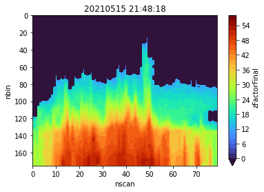
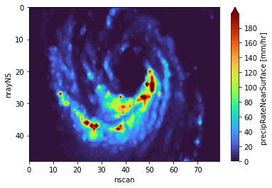
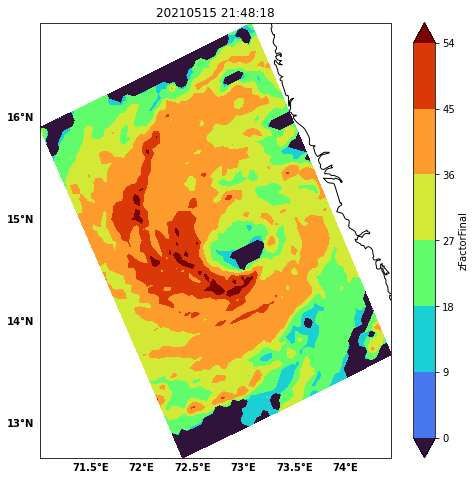

DRpy Example 3#
author: Hamid Ali Syed
date: Apr 18, 2023
import numpy as np
import h5py
import matplotlib.pyplot as plt
import cartopy.crs as ccrs
# import netCDF4 as nc
import xarray as xr
import pandas as pd
import warnings
warnings.filterwarnings('ignore')
#install drpy
# !pip install git+https://github.com/dopplerchase/DRpy.git
import drpy
import datetime as dt
dt.datetime(2021,5,15,20,43)
datetime.datetime(2021, 5, 15, 20, 43)
Create PPS account#
create your PPS account here: https://registration.pps.eosdis.nasa.gov/registration/
Download Data#
io = drpy.io.netrunner(servername='Research',username='XXXXXXX@XXXX.XXX',
start_time=datetime.datetime(2021,5,15,20,43),
end_time=datetime.datetime(2021,5,15,22,17))
file = '2A.GPM.DPR.V9-20211125.20210515-S204332-E221604.040979.V07A.HDF5'
Read data#
dpr = drpy.core.GPMDPR(filename=file)
# dpr.ds
start = 5550
end = 5630
dpr.ds['zFactorFinal'].isel(nscan=slice(start,end),nfreq=1).max(dim='nrayNS').plot.contourf(x='nscan',
levels=range(0,60,2),
cmap='turbo')
plt.title(pd.to_datetime(dpr.ds['zFactorFinal'].isel(nscan=slice(start,end),nfreq=1).time[0,0].values).strftime(
'%Y%m%d %H:%M:%S'))
plt.gca().invert_yaxis()

dpr.ds['precipRateNearSurface'][start:end,:].plot.contourf(x='nscan',levels=range(0,200,2),cmap='turbo')
plt.gca().invert_yaxis()

import cartopy.crs as ccrs
import cartopy.feature as feat
from cartopy.mpl.gridliner import LONGITUDE_FORMATTER, LATITUDE_FORMATTER
def gline(ax):
gl = ax.gridlines(crs=ccrs.PlateCarree(), linewidth=1, color='black', alpha=0.5,
linestyle='--', draw_labels=True)
gl.xlabels_top = False
gl.ylabels_left = True
gl.ylabels_right=False
gl.xlines = False
gl.ylines = False
gl.xformatter = LONGITUDE_FORMATTER
gl.yformatter = LATITUDE_FORMATTER
gl.xlabel_style = {'weight': 'bold'}
gl.ylabel_style = {'weight': 'bold'}
plt.figure(figsize=[8,8])
ax = plt.axes(projection=ccrs.PlateCarree())
dpr.ds['zFactorFinal'][start:end,:,:,0].max(axis=2).plot.contourf(x='Longitude',y='Latitude',levels=range(0,60,9),
cmap='turbo')
ax.set_title(pd.to_datetime(dpr.ds['zFactorFinal'][start:end,:,160,0].time[0,0].values).strftime('%Y%m%d %H:%M:%S'))
ax.coastlines()
gline(ax)
